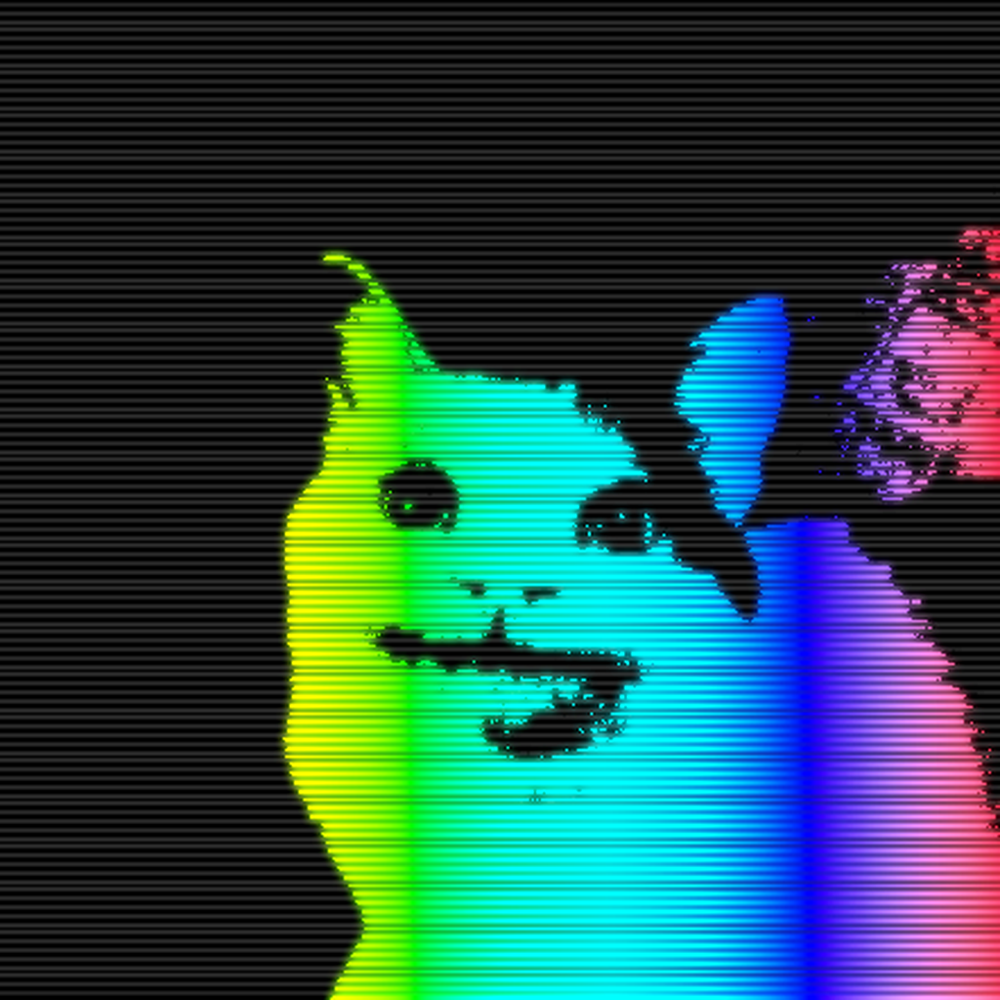

OR


| name | from | to | status | notes |
|---|---|---|---|---|
| waffologia | 2025 aug 13 | present | active | waffologia is the latest installment of any media channel under the katrewkate umbrella, it is the most unique one, suited for videos and content that katrewkate personally likes, but doesn't fit mellxweye/katrewkate themes. [SEE ABOVE] |
| mrsigmaboi [55] | 2025 august | 2025 september present? |
joke username inactive atm |
mrsigmaboi, optionally mrsigmaboi55 is rainbow six siege nickname for katrewkate, who went by that username until early september, until an update rolled out that prevented the use of this nickname without having to create a seperate account. the future of this funny username is unknown. |
|
|
2025 jan | present | active you are here |
sigma |

|
2024 sep | current | active | 6th gen [idk why its 6th] bot, which is the newest and most advanced, and sadly, likely the last bot devloped by katrewkate. it contains simple, yet advanced and wellput together systems, that just work lowkey hella fire. from language support, to currency, to achievements, it has a lot of stuff. find the boat page for more details! [can you find the secret boat page? :3] add 2 ur srvr |
|
unofficial pfp |
2023 nov 14 | present | active | [SEE ABOVE], also previously nviimii, v13krlx, karuboom. [in reverse chronological order], names mean pretty much nothing, i think? mellxweye was originally a reference to mellow-hi [mellohi] from minecraft. |
|
losdank |
2023 jun | 2023 aug | inactive | losdank was an american-style bot, developed during the summer of 2023, after which, it slowly broke and was discontinued, as there was not much to do / add. |
|
jagger |
2023 jun | 2023 jul | inactive | jagger is sigma. jagger is sigma. im kidding, jagger was.. idk what it was supposed to be, but it was supposed to be a fun bot with multiple features that never got added lol. also... dsharpplus... |
|
tag with pfp [yt] |
2023, june 1 | present | active | [SEE ABOVE], katrewkate is originally a joke username taken from andrew tate, and modified by me, duh, and such an username stuck with me for a while, and it was the username of my main alt account on discord, where i eventually adapted it more or less fully. however, vafelkis / katrewkate are still used ambigously [wtf is this word bro] |
|
dispay bot pfp logo 1 logo 2 |
2023 feb | 2023 oct | functioning inactive |
dispay was a failed multicurrency bot, that was fully functional, and probably still is, however its economy was quickly destroyed, and kat was lowkey irresponsible and ended up giving away free money, and eventually the dispay dollar lost its value, and with it, the whole dispay concept was discontinued. [also powered by dsharpplus] |
|
enforcer
 |
2023 jan 31 | 2023 september | discontinued broken |
originally developed for a discord server "vafelkia", this bot [powered by dsharpplus 5] quickly descended into chaos and died out very quickly, one of the biggest failures of all time, and ended up becoming the most unique failed bot, i think? it featured database support, and, GUESS WAT, visa system.... and something else? [unavailable anymore] |
|
|
2022 oct 22 | 2023 september | operational warning |
a bot [powered by dsharpplus 5] with argueably a very unique style and the most consistent one too, it is mostly a stat bot, which is used occasionally for fun, it isn't entirely broken, but is just discontinued. add 2 ur srvr |
|
multiplybyinfinity |
2022 august | 2023 september | inactive accessible |
swiss. a channel created in august of 2022, which lasted for a solid few... months. and had a few videos, before being discontinued, with the last clips being filmed in march, and then kind of just forgotten. multiplybyinfinity [multi] was supposed to be based in Switzerland. "üç´ Ich liebe schokoladen!" |
|
|
2022 june | late 2023 | discontinued broken |
a certain ideology based [bc] bot, which had a lot of fun and lowkey awesome features, however was discontinued due to its complexity, and bc itself kind of collapsing. [unavailable] |
|
|
2022 feb 13 | 2025 august [present]* |
discontinued special status |
originally powered by dsharpplus 4 [now 5], developed with sokoladinis, as a music bot, that is still functional, essential features work, but are unsupported, and is mostly kept alive for personal use. add 2 ur srvr |
|
tweed
|
2022 | 2023 | inactive accessible |
tweed was a fictional character/persona, that was around for around a year or two, until being rebranded to the ace on youtube, where it stays like so until today. however, tweed is the official name [as reverted in 2024?], but is inactive, besides having a few videos with someone. |
|
mellowfalls |
2021 oct | mid 2022 [phased out] |
inactive | mellowfalls [and its bot] were around from late 2021 to around early 2022, and then phased out fully in the middle of 2022. the server itself was a fun place mostly focusing on aesthetics and cozyness. however, this server died quickly, and litva replaced it eitherway. the mellow falls layout is the current style used in multiple servers [vafelkia, dom3ca's city server, ahreally's server, litva.] dsharpplus... |
|
|
2021 oct | 2023 [present?] |
discontinued semi-working |
global was a 2nd gen bot [powered by dsharpplus 4], which was released in 2021 and maintained until around late 2022, with a few updates maybe even in 2023? originally created by the request by a certain guy named loading namel, idk who he is, but anyhow. the bot has since died, and is mostly inactive, however, it still works and holds up reasonably well. it had a lot of fun and awesome features, was very innovative as well! NOTE: IT'S NOT A NUKE BOT, it was a joke at the time hahaha, its fine, trust üôÑ add 2 ur srvr |
|
|
2021 oct | 2022 | discontinued semi-working |
litva was a bot developed for the server 'litva', this bot was the most advanced at the time, and is still one of the best bots i have ever made, having a bunch of features, and even somehow working tictactoe. coded in discord.net [the last bot to ever be coded in that], and yeah. that's that. a restricted version could be uploaded for the future here, but not now. |
|
vafelkis
pfp 2021-2023 pfp 2023 and after [using different variations] |
2021 first mention |
2023 jun [present] |
still used, rarely | originally a nickname for [redacted] during the days of litva's peak [2021 summer], because of some waffle joke, this nickname was adapted shortly after in litva, then fully in '21 september or so. there were multiple efforts [AHEM... someone.] to reverse this change. however, these efforts fell short. replaced by katrewkate in jun 2023, but is still used. |
|
[redacted] |
2020 may 28 | late 2023 [fully phased out] |
inactive | my first accounts, and such. i will not comment much, but it was surely a blast. |


sanctioned elements:
the [people's] republic of china, russia [bald volodya in particular], the css command @import, and opera gx/air, beamng.drive for destroying my blayitul sunburst rs skin, the soviet onion, doonlad tramp, andrew tate, the 6th reiteration of france, aantartica. utf-16 le encoding, discord [shitty ui updates, no care for their devs :')'], the republic of the united kingdom
"the cake is a lie."